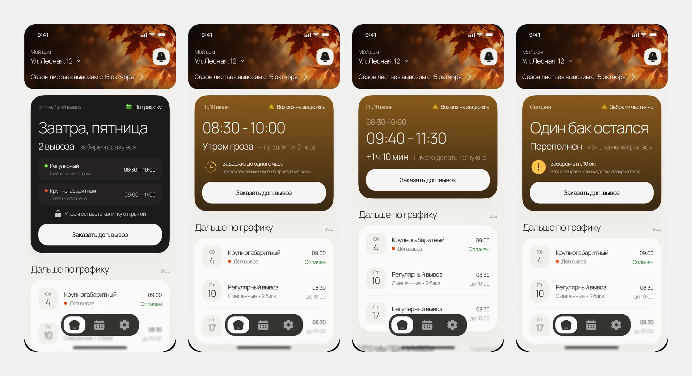
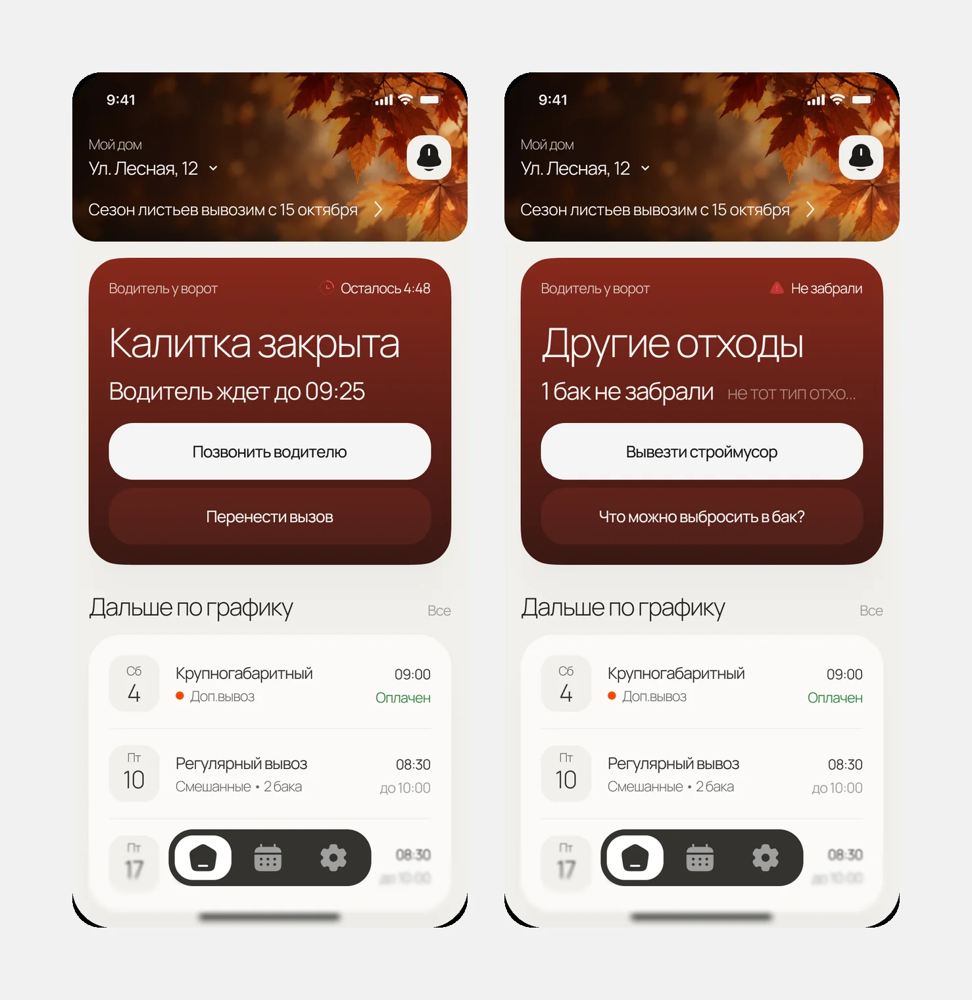
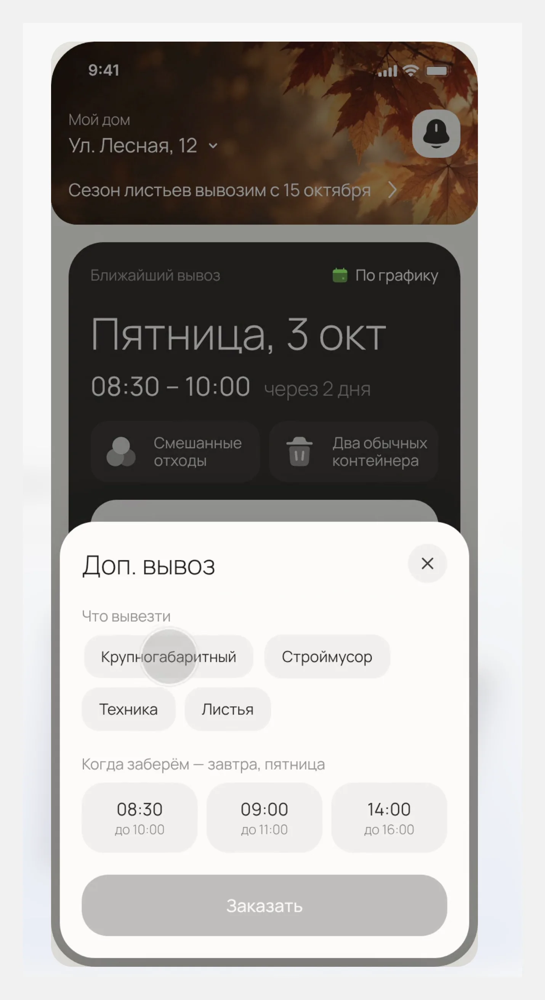
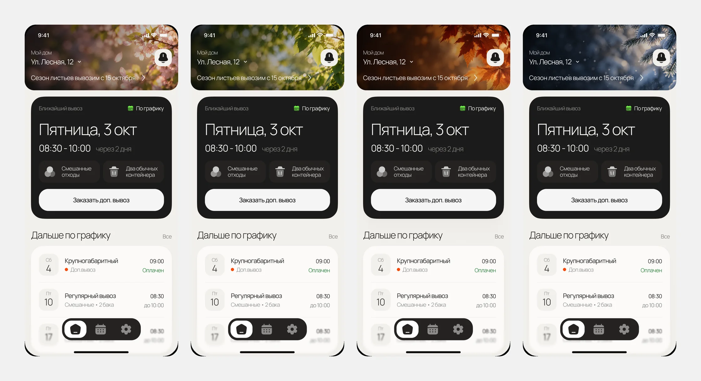

Проблема
С 2019 года мусор у частных домов вывозит региональный оператор по договору. Формально всё работает, но люди недовольны. Проблема не в том, что мусор совсем не вывозят, а в том, что человек ничего не знает: когда приедут, что заберут и приезжали ли вообще.
россиян называют плохую организацию сбора и вывоза мусора главной экологической проблемой
Опрос Народного фронта, 2024считают, что после мусорной реформы с вывозом стало только хуже
Там же, 16 419 опрошенныхжалоб в сервис «РЭО Радар» — на несвоевременный вывоз, ещё 31% — на нарушения при сборе
РЭО, декабрь 2024жалобы на вывоз мусора и контейнерные площадки за один месяц по стране
РЭО, ноябрь 2025Исследование
Чтобы понять, где на самом деле болит, собрал данные из нескольких источников:
- Кабинетное исследование. Данные РЭО и Народного фронта о жалобах на вывоз мусора.
- Истории владельцев домов. Разбор публикаций и жалоб, где люди описывают свой опыт с регоператором.
- Конкуренты. Сервисы заказа вывоза ЗаБеру и МусорОФФ и их отзывы в RuStore.
- Путь пользователя. Собрал из всего этого путь организатора и отметил боли.
Инсайты
Люди злятся не на сам мусор, а на то, что не понимают, что происходит.
Откуда: 36% жалоб в «РЭО Радар» — на несвоевременный вывоз. В отзыве на ЗаБеру человек узнал, что пакеты не забрали, только вечером, и каждый раз писал менеджерам.Человек платит каждый месяц, но не видит, что услуга оказана.
Откуда: владелец дома в статье Т—Ж не может доказать, что мусор у него забирают, а платит круглый год. РЭО в 2024 году предложил обязать водителей фотографировать вывоз.Они про пакеты у двери квартиры, а у дома мусор другой: ремонт, техника, листья.
Откуда: разбор ЗаБеру и МусорОФФ, оба считают заказ по количеству пакетов.Закрытая калитка или не тот мусор в баке — и человеку надо звонить и выяснять.
Откуда: путь пользователя и отзывы. Для жалоб на вывоз есть даже отдельный государственный сервис «РЭО Радар».Пользователь
Владелец частного дома, который в семье «отвечает за мусор». Регулярный вывоз у него уже есть, но иногда появляется что-то сверху: ремонт, старая техника, листья осенью.
Путь пользователя
Путь организатора от «появился мусор» до «вопрос закрыт».
Не ясно, влезет ли в обычный вывоз или нужен отдельный.
Знает день, но не знает время. Интервалы слишком широкие.
Гроза, закрытая калитка, бак не забрали. Узнаёт об этом последним.
Надо звонить или искать окно в календаре на месяц вперёд.
Хочется просто забыть про мусор до следующего раза.
Гипотезы
Из инсайтов вывел гипотезы. Каждую можно проверить конкретной метрикой.
Если показать правила приёма прямо на главном экране, люди реже будут класть в бак то, что не заберут.
Доля вывозов «забрали не всё»Если карточка сама объясняет любые изменения: грозу, сдвиг времени, задержку, станет меньше звонков «когда приедете».
Звонки в поддержку на 100 вывозовЕсли из проблемы можно сразу её решить: позвонить водителю, перенести, заказать вывоз, больше ситуаций закроется без поддержки.
Доля проблем, решённых в приложенииЕсли доп. вывоз сразу предлагает реальные окна на завтра, его будут чаще заказывать в приложении, а не по телефону.
Конверсия в доп. вывоз и время заказаКак пойму, что работает
Если человек ни разу не позвонил и не написал, значит, приложение ответило на все его вопросы.
Ключевые решения
- Всё главное в одной карточке. День, время и что заберут. Тут же правила: что можно класть в бак, а что вывозится отдельно.
- Карточка меняется под ситуацию. Гроза, сдвиг времени, забрали не всё. Сразу видно, что случилось и нужно ли что-то делать, а цвет показывает, насколько всё серьёзно.

- Из любой проблемы есть выход. Калитка закрыта: можно позвонить водителю или перенести вывоз. Бак не забрали из-за строймусора: одна кнопка заказывает вывоз именно его.
- Доп. вывоз в три касания. Выбрал, что вывезти, и ближайшее окно. Без календаря на месяц вперёд.


- Шапка меняется по сезону и подсказывает сезонную услугу, например вывоз листьев осенью. Это ещё и точка продажи доп. услуг.
- Без баллов и эко-бейджей. Это приложение не про экологию, а про то, чтобы не думать о мусоре. Геймификация тут только отвлекала бы.

Результат
Главный экран, все состояния карточки, доп. вывоз и сезонные услуги. Каждое решение привязано к инсайту, боли из пути пользователя и метрике, по которой его можно проверить.
Следующие шаги
- Юзабилити-тест на 5 владельцах домов. Три задания: понять, можно ли выбросить старый диван; заказать вывоз листьев; разобраться, что делать, если калитка закрыта.
- Пилот на одном посёлке. Сравнить звонки в поддержку и заказы доп. вывоза до и после приложения.
- Фото после вывоза. Добавить в карточку фото контейнера, чтобы человек видел, что услуга оказана. РЭО как раз предлагает обязать водителей делать такие фото.